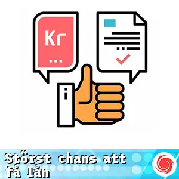

Vi hjälper dig att hitta lån med störst chans att få låna pengar vilket innebär flexibla krav, som lägre återbetalningar och udda belopp.
Enligt vår erfarenhet går det med stabil inkomst och god kreditvärdighet lätt att hitta en långivare som specialiserar sig på snabbare godkännanden vilket öka chansen att bli beviljad.

Särskilda lån
Frågor och Svar []
Långivaren med högst beviljandegrad (exempelränta 39 %) för april 2025 är Daypay
En låneförmedlare är en tjänst som hjälper dig att jämföra olika långivare och deras villkor. Genom att endast göra en kreditupplysning kan du ansöka hos flera långivare, vilket ökar chanserna att få lån beviljat, särskilt om du har en svag kredithistorik.
Ja, det är möjligt att få lån även med betalningsanmärkningar. Många långivare är villiga att ta risken och erbjuder lån specifikt för personer med dålig kreditvärdighet. Se dock till att noggrant granska villkoren, eftersom räntorna kan vara högre.
Att ha en medsökande kan avsevärt öka dina chanser att få ett lån beviljat. En medsökande ger långivaren en extra inkomstkälla och en stabilare ekonomisk grund, vilket gör ansökningen mer attraktiv.
Om du missar en betalning kan det leda till förseningsavgifter och negativ påverkan på din kreditvärdighet. Vid bristande betalning kan långivaren även skicka din skuld till inkasso, vilket kan orsaka ytterligare komplikationer.
Ja, vissa långivare erbjuder lån utan att göra kreditupplysningar via UC. Istället använder de alternativa metoder för att bedöma din kreditvärdighet, vilket ger fler människor möjlighet att låna även med en mindre bra kreditprofil.
Flera kreditupplysningar på kort tid kan skada din kreditprofil och ge intryck av att du är en riskabel låntagare. För att förbättra dina chanser bör du begränsa antalet ansökningar och vänta på att tidigare förfrågningar ska försvinna innan du ansöker igen.
Långivare bedömer flera faktorer, inklusive din kreditvärdighet, inkomst, betalningshistorik och skuldsättning. De letar efter tecken på ekonomisk stabilitet och en god återbetalningsförmåga innan de beviljar lån.
Kreditvärdigheten är en bedömning av din förmåga att återbetala lån. Du kan förbättra den genom att betala räkningar i tid, minska befintliga skulder och undvika att göra många kreditupplysningar.
Ja, det finns långivare som erbjuder lån anpassade för studenter och individer utan fast anställning. Dessa lån kan ha lägre krav och mer flexibla återbetalningsvillkor, men räntekostnaderna kan vara högre.
Sms-lån kan verka som en snabb lösning för akuta ekonomiska problem, men de har ofta höga räntor och korta återbetalningstider. Det är viktigt att noga överväga din förmåga att återbetala innan du väljer denna typ av lån.
Topplista störst chans till lån
Topplista för rekommenderade och utvalda störst chans till lån 2024. För hjälp att få okomplicerat störst chans till lån med hög servicenivå tipsar vi om följande:
Ferratum – Mer än pengar till alla – Direktutbetalning till de fyra storbankerna.
Northmill – Banken som gör det bättre – Före kl. 13:30 samma dag
Viaconto – Introducerar nya lånemöjligheter – Vardagar samma dag.
Binly – När du behöver det!
– Direkt - dygnet runt
Cashbuddy – Skapar möjligheter i vardagen – Utbetalning efter godkänt autogiro.
SMSPengar – Sms-lån hos Smspengar – Direktutbetalningar 24/7
Extralånet – Ett bra extra lån åt alla – Utbetalning samma dag
Merax – Hur mycket vill du ta ut? – Oftast samma dag
GFMoney – Flexibel kontokredit – Fem minuter med konto i storbank.
Nätlån – Låna pengar snabbt och säkert – Inom 1-2 dagar
Vid kredit om 50 000 kr till 16,9 % årsränta under fem år med 60 återbetalningar, en uttagsavgift om 195 kr samt en administrativ avgift om 19 kr per månad blir totalt belopp att återbetala 75 827 kr. Kreditbeloppet, antalet återbetalningar, uttagsavgiften och räntan för kundens lån kan avvika från ovan angivna exempel. Det totala belopp som kunden ska betala beror på hur kontokrediten utnyttjas.
Ett lån på 6 000 kronor till 39.5 procents bunden ränta med en
återbetalningstid på en månad, med ett betalnig om 196 kronor i ränta och
380 kronor i uppläggningsavgift samt 45 kronor i aviavgift ger en
effektiv ränta på totalt 261.1 procent. Totalt att återbetala blir 6621
kronor.
En kredit på 9 500 kr till 42,50 % ränta med en återbetalningstid på tio månader (med tio återbetalningar om 1 910 kr, 1 576 kr, 1 536 kr, 1 496 kr, 1 456 kr, 1 415 kr, 1 375 kr, 1 335 kr, 1 294 kr samt 1 254 kr) och 1 205 kr i uppläggningsavgift, 1 155 kr i Lägst att betala-belopp samt 600 kr i aviavgifter ger en effektiv ränta på totalt 198,86 %. Det totala beloppet att återbetala är 14 648 kr.
25.000 kr på 5 år. Bunden årsränta: 26,05 %. Effektiv årsränta: 29,40 %. Månadskostnad: 749 kr (60 ggr). Totalt att återbetala: 44.955 kr. (Uppdaterat 2018-09-01).
Utnyttjad kredit om 15 000 kr i 12 månader, totalt att återbetala 19 725 kr (snitt 1 644 kr per månad). Effektiv årsränta: 71.04%. Kontokredit med rörlig nominell årsränta på 44.00%. Avgifter: Uppläggningsavgift 280 kr. Uttagsavgift 95 kr. Avi/Månadsavgift: 45 kr. Lånexemplet förutsätter ett uttag med avgift, en uppläggningsavgift samt 12 avi/månadsavgifter.
30 000 kr i annuitetslån på 4 år med 27,95% nominell ränta, 31,82% effektiv ränta, kostar 1 045 kr/mån (48 ggr). Att återbetala: 50 160 kr inkl. alla avgifter.
Krediten har 43,98 % rörlig nominell årsränta, 475 kr i uppläggningsavgift och 25 kr månatlig administrationsavgift. En exempelkredit på 10 000 kr som återbetalas med 1 120 kr per månad under 12 månader har en effektiv årsränta på 76,8 %. Det innebär en total kostnad för krediten om 3 440 kr. Löptid från 8 till 62 månader vid maximalt initialt uttag, lägsta möjliga månadsvisa återbetalning och inga ytterligare uttag.
Lånexempel (2024-01-16):
Utnyttjad kredit om 15 000 kr i 12 månader, totalt att återbetala 19 725 kr (snitt 1 644 kr per månad). Effektiv årsränta: 71.04%. Kontokredit med rörlig nominell årsränta på 44.00%. Avgifter: Uppläggningsavgift 280 kr. Uttagsavgift 95 kr. Månadsavgift: 45 kr. Lånexemplet förutsätter ett uttag med avgift, en uppläggningsavgift samt 12 månadsavgifter.
30 000 kr i annuitetslån på 4 år med 27,95% nominell ränta, 31,82% effektiv ränta, kostar 1 045 kr/mån (48 ggr). Att återbetala: 50 160 kr inkl. alla avgifter.
Låna 5 000 kr i 60 dagar. Totalt att återbetala 5 719 kr, alltså 2 859 kr per månad. Effektiv ränta 126,45%, årlig fast ränta 39%. Uppläggningsavgift 276 kr, för återkommande kunder inom 12 mån 221 kr. Aviavgifter 59 kr.
Rekommenderade långivare - störst chans till lån
Jämförelse av utvalda långivares exempelräntor, kostnad och belopp
För jämförelse av störst chans till lån tittar vi på snabblån och hämtar räntor och kostnader från långivarnas egna exemel på vanliga kreditsituationer.
I tabellen kan vi bland annat se hur stora lån som är vanliga samt vilka fördelar långivaren kan erbjuda.
Scrolla tabellen
Trustpilot
Minbelopp
Maxbelopp
Exempelbelopp
Ränta från
Ränta till
Utbetalning
Startavgift
Aviavgift
Upplysning
Avgiftsfritt
-
20 000 kr
150 000 kr
50 000 kr
29 %
29 %
Lånet betalas ut inom 24h
0 kr
0 kr
Banky störst chans till lån Fast ränta 29 %
Annuitetslån 5 år. Effektiv årsränta 29,97%. Ett lån på 50 000 kr kostar då 1 512 kr/mån (60 avbetalningar), dvs totalt 83 675 kr. Ingen uppläggningsavgift eller aviavgifter. 26,50% nominell ränta. Räntan är rörlig. Banky samarbetar med Nordiska Kreditmarknadsaktiebolaget.
Krediten har inga avgifter. Krediten har inga avgifter. Rörlig nominell årsränta är 28,95 % och den effektiva räntan är 33,1 %. En exempelkredit på 10 000 kr som återbetalas med 970 kr per månad under 12 månader har en total kostnad om 1 640 kr. Löptid från 6 till 52 månader vid maximalt initialt uttag, lägsta möjliga månadsvisa återbetalning och inga ytterligare uttag.
Northmill störst chans till lån Ränta 7,9 - 25,9 %
Vid kredit om 50 000 kr till 16,9 % årsränta under fem år med 60 återbetalningar, en uttagsavgift om 195 kr samt en administrativ avgift om 19 kr per månad blir totalt belopp att återbetala 75 827 kr. Kreditbeloppet, antalet återbetalningar, uttagsavgiften och räntan för kundens lån kan avvika från ovan angivna exempel. Det totala belopp som kunden ska betala beror på hur kontokrediten utnyttjas.
Utnyttjad kredit om 25 000 kr i 12 månader, totalt belopp att återbetala 30 890 kr (snitt 2 574 kr per månad). Effektiv årsränta: 53 %. Kontokredit med variabel nominell årsränta på 44 %. Övriga avgifter: Uppläggningsavgift 0 kr.
Lånekoll störst chans till lån Ränta 5,25 - 29,5 %
Räkneexempel om annuitetslån på 300 000 kr med start-/aviavgift 0kr, återbetalningstid 15år, rörlig ränta 7,0%, effektiv ränta 7,23% ger (180) månadsbetalningar om 2696 kr totalt betalningsbelopp 485 367 kr. Räntor: 20230826.
Annuitetslån 12 år. Effektiv årsränta 6.98 %. Ett lån på 200 000 kr kostar då 2032 kr/månad (144 avbetalningar), dvs totalt 292 653 kr. Ingen start-/aviavgift. 6.77 % nominell ränta (rörlig ränta, sätts individuellt baserat på dina förutsättningar). Ansökan kommer att skickas till de kreditgivare som bäst matchar din profil, uppdaterat 2023-03-01. Återbetalningstid 1-15 år. Maximala räntan är 32,49%. Räntespann mellan: 3,25%-32,49%.
Extralånet störst chans till lån Fast ränta 24,95 %
30 000 kr i annuitetslån på 4 år med 27,95% nominell ränta, 31,82% effektiv ränta, kostar 1 045 kr/mån (48 ggr). Att återbetala: 50 160 kr inkl. alla avgifter.
Ett lån på 6 000 kronor till 39.5 procents bunden ränta med en
återbetalningstid på en månad, med ett betalnig om 196 kronor i ränta och
380 kronor i uppläggningsavgift samt 45 kronor i aviavgift ger en
effektiv ränta på totalt 261.1 procent. Totalt att återbetala blir 6621
kronor.
30 000 kr i annuitetslån på 4 år med 27,95% nominell ränta, 31,82% effektiv ränta, kostar 1 045 kr/mån (48 ggr). Att återbetala: 50 160 kr inkl. alla avgifter.
Cashbuddy störst chans till lån Fast ränta 26,05 %
25.000 kr på 5 år. Bunden årsränta: 26,05 %. Effektiv årsränta: 29,40 %. Månadskostnad: 749 kr (60 ggr). Totalt att återbetala: 44.955 kr. (Uppdaterat 2018-09-01).
Krediten har 43,98 % rörlig nominell årsränta, 475 kr i uppläggningsavgift och 25 kr månatlig administrationsavgift. En exempelkredit på 10 000 kr som återbetalas med 1 120 kr per månad under 12 månader har en effektiv årsränta på 76,8 %. Det innebär en total kostnad för krediten om 3 440 kr. Löptid från 8 till 62 månader vid maximalt initialt uttag, lägsta möjliga månadsvisa återbetalning och inga ytterligare uttag.
Låna 5 000 kr i 60 dagar. Totalt att återbetala 5 719 kr, alltså 2 859 kr per månad. Effektiv ränta 126,45%, årlig fast ränta 39%. Uppläggningsavgift 276 kr, för återkommande kunder inom 12 mån 221 kr. Aviavgifter 59 kr.
[april 2025]
Statistik (antal störst chans till lån)
Utvalda lån
12
Lägsta belopp
1 000 Kr
Högsta belopp
600 000 Kr
Snitt exempelbelopp
61 750 Kr
Lägst ränta
5,2 %
Högst ränta
44,0 %
Startavgift
5
Aviavgift
5
Anmärkning OK
12
Räntespann störst chans till lån []
Banky
Brixo
Northmill
Ferratum
Lånekoll
Lendo
Extralånet
Viaconto
Nätlån
Cashbuddy
Merax
Daypay
Maximera dina lånechanser klokt.
Att navigera i lånedjungeln kan kännas överväldigande, särskilt när man står inför osäkerheter. Hur kan man maximera sina chanser att få godkänt? I en tid präglad av finansiella utmaningar är kunskap och strategi avgörande för att driva på låneprocessen.
Den som förbereder sig väl skördar framgång
Genom att noggrant välja långivare och överväga alternativ som lån utan UC kan individen öppna dörrar till ekonomiska lösningar.
Det handlar inte bara om att få pengar; det handlar om att fatta informerade beslut som skapar stabilitet på lång sikt.
Många gör misstaget att ansöka om flera lån samtidigt, vilket kan skada deras kreditprofil.
Lär dig allt om dina ekonomiska möjligheter.
Att förstå sin egen ekonomiska situation och agera strategiskt är nyckeln. En medsökande kan vara en stabiliserande kraft, som ger ytterligare trygghet för långivaren.
Det är av största vikt att granska lånevillkoren och vara medveten om egna skyldigheter.
Genom att hålla koll på betalningar och förbättra kreditvärdigheten kan man skapa en positiv krets av hållbar utveckling.
Att vara informerad och förberedd stärker den ekonomiska positionen i en föränderlig värld där varje beslut räknas.
Så, ta steget och utforska dina möjligheter – en ljusare ekonomisk framtid väntar.
Allt om att låna pengar.
Störst chans att få låna pengar
Att få ett lån beviljat kan vara en utmaning för många, men det finns även långivare som har en hög beviljandegrad, vilket betyder att de godkänner många låneansökningar. Dessa långivare är ofta mer flexibla och kan ge personer med varierande kreditvärdighet chansen att låna pengar. En vanlig typ av långivare är de som erbjuder lån utan UC. UC, en ledande kreditupplysningsfirma i Sverige, använder historik och kreditbetyg för att avgöra en persons betalningsförmåga. Långivare som väljer att inte använda UC-kontroller gör det möjligt för individer med lägre kreditvärdighet att ansöka om lån.
Att förbättra möjligheterna att få lån handlar inte bara om att välja rätt långivare. Det är avgörande att man som låntagare noggrant överväger sin ekonomiska situation. Många människor kan behöva lån för flera olika syften, exempelvis för att finansiera en investering eller för att omstrukturera befintliga skulder. När man ansöker om lån är det viktigt att ha en klar och tydlig plan för hur man ska återbetala lånet i tid, för att undvika att hamna i en skuldfälla.
För att öka chanserna till att få lån beviljade kan följande strategier vara användbara:
Begränsa antalet kreditupplysningar: Varje kreditupplysning kan påverka din kreditvärdighet negativt. För att minimera detta bör du inte ansöka om flera lån inom kort tid.
Undvik att handla på faktura: Att handla med faktura kan leda till en ökad skuld och därigenom påverka din kreditvärdighet.
Anlita en låneförmedlare: Dessa kan hjälpa dig att jämföra olika alternativ och hitta lån anpassade efter din situation.
Välj långivare med omsorg: Forska om olika långivare och deras villkor innan du ansöker.
Ha en medsökande: En medsökande kan öka säkerheten för långivaren och därmed dina chanser att få lån beviljat.
Om man har en låg inkomst eller en tveksam kreditprofil är det viktigt att vara strategisk. Genom att undersöka långivare som godkänner ansökningar med lägre krav, kan man öka sina chanser. Dessutom kan en låneförmedlare ge värdefulla råd och stöd genom hela processen, vilket kan vara särskilt hjälpsamt för dem som aldrig tidigare har ansökt om lån.
Genom att betala räkningar i tid och överväga att samla smålån till ett större lån kan man också förbättra sin kreditvärdighet och därmed öka sina möjligheter för framtida lån. Att välja långivare med noga övervägande och ha medvetenhet om sin ekonomiska situation är avgörande för att maximera chanserna för ett godkänt snabblån.
Lättare att få lån
Det finns många människor som har svårt att få lån, vilket kan bero på en rad olika faktorer. Bland de vanligaste orsakerna är många kreditupplysningar, betalningsanmärkningar, eller en låg inkomst. Enligt svensk lag är långivare skyldiga att utföra kreditupplysningar innan de beviljar lån. Detta kan resultera i att ansökningar nekas om du har en negativ kreditprofil.
En av de främsta anledningarna till att lån avslås är om det finns flera kreditupplysningar registrerade inom en kort tidsperiod. Om en långivare ser att det har gjorts många förfrågningar kan det tyda på en osäker ekonomisk situation och därmed öka risken för att lånet inte kommer att återbetalas. Statistiker visar att låntagare med upprepade ansökningar har en markant lägre godkännandegrad.
Det är också värt att nämna att långivare ser positivt på stabila och pålitliga låntagare. Om du har en medsökande, en person som kommer att dela ansvaret för lånet, kan detta öka chansen för beviljande av lånet. Långivare värderar den extra säkerheten av fler inkomstkällor. Dessutom kan en negativ ekonomisk historia, som att sakna stabil inkomst, göra det svårare att låna pengar.
För dem som kämpar med att få lån kan det vara bra att överväga långivare som använder alternativ till UC, som Creditsafe. Dessa långivare kan ha mer flexibla kriterier och ge nya möjligheter, även för dem med svag kreditvärdighet.
Det är möjligt att finna akutlån utan UC, vilket kan vara värt att överväga för dem med betalningsanmärkningar. Med rätt strategi och kunskap kan du öka dina möjligheter att få det lån du behöver. Att aktivt arbeta med att förbättra sin kreditvärdighet och överväga andra långivare kan vara en väg framåt för dem som har ekonomiska utmaningar.
Det finns mycket som man kan göra för att det ska bli lättare att bli beviljad ett lån!
Ansöka om lån
Processen att ansöka om lån kan upplevas som krävande och stressande, särskilt om man är osäker på sin kreditvärdighet eller har varit med om att nekat lån tidigare. Inledningsvis är det viktigt att ha en god förståelse för sin ekonomi. Genom att noggrant överväga hur man hanterar sina utgifter kan man bygga en stabil grund för en låneansökan.
Att undvika att handla på faktura och istället använda betalkort eller andra betalningstjänster kan skydda din kreditprofil. Detta minimerar behovet av kreditupplysningar och hjälper till att hålla din kreditvärdighet intakt. En rekommenderad strategi är att anlita en låneförmedlare. De kan hjälpa till att sammanställa ansökningar med hög beviljandegrad genom att endast använda en kreditupplysning, vilket är fördelaktigt för att förbättra din kreditvärdighet.
Sammanföring av befintliga skulder i ett samlingslån kan också vara värt att tänka på. Genom att slå ihop flera lån kan du både förenkla din ekonomi och öka möjligheterna att få nya lån. Dessutom är många långivare villiga att ge lån även till kunder med betalningsanmärkningar, vilket gör att dörrarna öppnas för fler. Att ha en utförlig och transparent låneansökan är också viktigt; långivare vill ha så mycket information som möjligt för att kunna göra en bedömning av din återbetalningsförmåga.
Att minska antalet skulder innan du ansöker visar att du tar ansvar för dina finanser, vilket är positivt för långivaren. Om du inkluderar en medsökande, kan detta ge långivaren en större trygghet genom fler inkomstkällor, vilket kan bidra till att öka chansen till beviljande av lånet.
Genom noggrant förberedelse och rätt val av långivare kan du maximera dina chanser att få ett lån som passar dina ekonomiska behov.
Få lån med betalningsanmärkningar
Att få lån med betalningsanmärkningar kan kännas som en stor utmaning, men det finns fortfarande möjligheter för dem som befinner sig i denna situation. Flera långivare på marknaden väljer att inte utföra en UC-kontroll och är därför mer benägna att bevilja lån trots anmärkningar. Detta innebär att låg kreditvärdighet inte alltid är ett hinder; istället finns det nischbanker som målmedvetet riktar sig till låntagare i dessa situationer.
Sms-lån är en vanlig låneform för individer med betalningsanmärkningar. Dessa lån ger snabb tillgång till pengar men kommer också med specifika och strikta krav. Långivare kan till exempel sätta gränser för hur många betalningsanmärkningar som kan godtas och kräva att inga nya anmärkningar registrerats under de senaste sex månaderna.
En fördelaktig strategi kan vara att ansöka med en medsökande, då detta förhöjer möjligheterna att få lånet godkänt, tack vare den extra säkerhet en annan inkomstkälla ger. Det finns också långivare som är öppna för bostadslån för dem med betalningsanmärkningar, vilket kan ge fler möjligheter för bostadsfinansiering.
Innan du skickar in din ansökan, är det viktigt att noggrant läsa igenom långivare villkor och tydligt förstå vilken typ av betalningsanmärkningar du har. Att säkerställa att inga kvarstående skulder hos Kronofogden existerar kan också vara fördelaktigt för dina låneansökningsmöjligheter.
Även om betalningsanmärkningar kan göra det svårare att få lån godkända, så är det viktigt att vara ärlig och utförlig i din ansökan. Det finns även långivare som kan erbjuda lån utan UC, vilket kan ge ytterligare alternativ för dem som söker lån utan att underkasta sig den traditionella kreditupplysningen.
Lån med låg inkomst
Att få lån med låg inkomst kan tolkas som en stor utmaning, särskilt för individer som studerar eller är arbetslösa. Det är inte ovanligt att långivare ställer krav på en månadsinkomst på mellan 10 000 och 15 000 kronor, vilket i många fall kan utesluta dem utan stabil inkomst. Det blir således avgörande att identifiera långivare som är villiga att bevilja lån utan krav på fast jobb och som accepterar lägre inkomstnivåer.
I Sverige finns det dock långivare med lägre inkomstkrav, så lågt som 2 000 kronor i månaden i vissa fall. När det rör sig om större lån, som exempelvis lån för bostad, kan det vara en stor fördel att ha en medsökande. Att kunna visa upp gemensamma inkomster ökar chansen att få lån, eftersom långivaren ser detta som en minskad risk.
Inkomst är alltid en central faktor vid ansökan om lån; många låneförmedlare kan kräva en årsinkomst på minst 100 000 kronor. Utan en stabil hushållsinkomst blir det utmanande för långivare att högt bedöma din återbetalningsförmåga. För de som saknar fast anställning och vill ha lån, blir det viktigt att välja långivare samt villkor med eftertanke.
För dem som befinner sig utan inkomst kan det också vara av stor betydelse att arbeta för att förbättra sin ekonomiska situation, till exempel genom att finna ett tillfälligt eller deltidsjobb. Att ha en stabil inkomst ökar inte bara chansen att få lån, utan kan även ge tillgång till bättre lånevillkor i och med att långivarna har större förtroende för återbetalningsförmågan.
För dem som akut behöver pengar kan cash lån vara en väg att gå. Trots de tuffa kraven från vissa långivare finns det fortfarande möjligheter att få lån med låga inkomstkrav. Genom förberedelser och förståelse om sina alternativ kan du öka möjligheterna att få lån, även vid begränsad inkomst.
SMS-lån som beviljar alla?
Det är viktigt att förstå att det inte finns några sms-lån som beviljar alla ansökningar, oavsett hur attraktivt det kan verka. Vissa långivare marknadsför sig med hög beviljandegrad, vilket innebär att de godkänner många ansökningar; men varje låneansökan bedöms fortfarande utifrån låntagarens kreditvärdighet och ekonomiska situation.
Faktorer som en svag kreditprofil, betalningsanmärkningar och många aktiva lån påverkar chansen att få lån. Sms-lån, som ofta framhävs som snabba och lättillgängliga, kan vara svåra att få godkända för personer med svag kreditvärdighet. Det är också värt att påminna om att långivare ibland använder formuleringar som ”Få lån utan krav på kreditvärdighet”, vilket kan skapa orealistiska förväntningar.
Snabblån tenderar att uppvisa betydligt högre räntor och dolda avgifter, vilket kan göra dem kostsamma över tid. För dem som har svårt att få lån kan alternativ som hopbakslån vara av intresse, där flera små lån samlas till ett större lån med mer hanterbara betalningar och en överskådlig återbetalningsstruktur.
När du överväger att ansöka om sms-lån är det även klokt att utforska långivare som erbjuder lån utan krav på kreditupplysningar via UC. Detta kan vara en fördel, särskilt om du vet att din kreditvärdighet är låg. Att jämföra långivares villkor och räntor är avgörande för att göra välinformerade beslut som kan spara pengar i det långa loppet.
I sammanfattning är det viktigt att alltid ha i åtanke att sms-lån inte är en garanti och att det är viktigt att vara medveten om de faktorer som påverkar din möjlighet att få ett lån. Att vara väl förberedd och informerad kan avsevärt öka chanserna till ett godkänt lån.
Öka chansen att få låna
Att öka chansen att få ett lån kräver planering och strategisk tänkande. Om du befinner dig i en situation med flera aktiva lån kan det vara bra att överväga att samla dem till ett samlingslån. Detta skapar inte bara lägre månatliga betalningar, utan gör också din låneprofil mer attraktiv för långivare som föredrar låntagare med färre skulder.
Att ansöka med en medsökande kan också förbättra dina chanser. En medsökande ger långivaren en extra säkerhet med flera inkomstkällor, vilket kan öka möjligheterna för godkännande. Det är också viktigt att vara medveten om antalet kreditupplysningar som gjorts. Har du gjort många förfrågningar på kort tid, kan detta negativt påverka din kreditvärdighet.
Innan du ansöker om lån, se till att dessa upplysningar har rensats eller minskat. Vissa långivare erbjuder snabba lån utan UC, vilket kan vara en stor fördel om din krediutpplysning inte är i bästa skick. Om din kreditvärdighet är låg, kan pantlån vara ett alternativ värt att överväga; dessa lån kräver säkerhet och kan ge dig möjlighet att låna pengar trots en svag ekonomisk profil.
Att utföra din egen research om långivare som ställer lägre krav kan också öka chanserna. Genom att jämföra olika lånealternativ och använda rådgivning från lånerådgivare kan du få en helhetsbild av vilka möjligheter du har. Universitet, kommuner samt ideella organisationer erbjuder ibland gratis lånerådgivning som kan vara till stor hjälp.
Genom att arbeta aktivt med din ekonomiska situation och informera dig om dina alternativ kan du öka chansen att få lån beviljade. En noggrann och välinformerad strategi kan göra stor skillnad i din låneansökningsprocess.
Medsökande ökar lånechansen
Att ha en medsökande kan på många sätt avsevärt öka dina chanser att få ett lån, särskilt när det rör sig om större lån so bostadslån och lån till kontantinsats. Långivare ser positivt på ansökningar där det finns mer än en inkomstkälla. Detta skapar en tryggare situation ur deras ögon och kan leda till högre godkännandenivåer för de med svagare kreditprofil.
Det är dock viktigt att inse att en medsökande också får ett ekonomiskt ansvar. Om du misslyckas med att betala lånet kan medsökanden bli skyldig att betala. Det är därför avgörande att ni båda är på samma sida angående de ekonomiska åtaganden som kommer med lånet.
Det finns många långivare som är villiga att erbjuda lån under mer förmånliga villkor, ifall en medsökande kan läggas till. Genom att ha en medsökande med en stark kreditprofil kan ni båda få bättre räntor och villkor, vilket är särskilt viktigt för större belopp. Det är även viktigt att vara öppen och ärlig om bådas ekonomiska situation; detta ger långivaren en klarare bild av er återbetalningsförmåga.
Genom att ge tydlig information och fakta kan ni båda öka sannolikheten för ett beviljat lån. Vid val av långivare är det klokt att välja institutioner som är kända för att skapa goda villkor för gemensamma låntagare.????
Den vanligaste vägen för par är att använda en direktbetalning, som Trustlylån, vilket gör ansökningsprocessen ännu smidigare. Genom att kombinera en medsökande och rätt långivare kan ni enkelt öka era chanser att få lån och möjliggöra era ekonomiska planer, som att skaffa ett hem eller göra betydande investeringar.
För många kreditupplysningar
Att ha för många kreditupplysningar gjorda av UC kan påverka dina möjligheter att få lån negativt. Varje ansökan om låna, kredit eller till och med mobilabonnemang registreras som en förfrågan. Om det finns många kreditupplysningar registrerade under en kort tidsperiod, skapas intrycket av att du kan vara en riskabel låntagare, vilket kan leda till avslagna låneansökningar.
Dessa upplysningar sparas i upp till 12 månader, och det är viktigt att förstå att långivare kan se på detta som en varningssignal. För att förbättra din situation är det klokt att vänta tills tidigare upplysningar försvinner innan du ansöker om nytt lån. Alternativt kan du även vända dig till långivare som har mer flexibla bedömningskriterier och använder andra upplysningstjänster som Bisnode eller Creditsafe.
Att samla lån kan också vara en värdefull strategi. Genom att slå samman flera lån i ett och samma lån, kan du både strömlinjeforma dina betalningar och förbättra chansen att få beviljat ett nytt lån. Detta är särskilt viktigt om du kan visa upp en stabil återbetalningshistorik i samband med betalningarna.
Det är också av stor vikt att läsa igenom villkoren för det lån du ansöker om. Att förstå hur olika kreditupplysningar kan påverka räntor och lånevillkor är avgörande. Genom att strategiskt hantera dina kreditupplysningar och låneansökningar kan du förbättra chansen att få beviljat lån och uppnå en stabil ekonomisk framtid.
Innan du lånar
Innan du tar ett lån är det avgörande att noggrant granska villkoren och endast ansöka om de lån du har råd att betala tillbaka. För att få en tydlig överblick över din ekonomi bör du inledningsvis utvärdera din nuvarande situation. Vilka lån och krediter har du? Skriv ner samtliga utgifter, räkningar och inkomst för att få en korrekt bild av din ekonomiska verklighet.
Att skapa en hushållsbudget är ett effektivt verktyg för att få kontroll över din ekonomi. Lista alla fasta kostnader, som hyra, räkningar och växande skulder. Om dina utgifter överstiger dina inkomster är det av yttersta vikt att du ser över och minskar kostnader innan du beviljas ett lån. Att städa upp dina abonnemang och se över matkostnader är ett bra första steg i den processen.
Om du överväger att ta ett lån med hög beviljandegrad, fungerar dessa långivare ofta bättre för ett bredare spektrum av kreditprofiler. Flexibla låneformer kan anpassas till din ekonomiska situation, vilket gör det lättare för dig att få beviljat lån.
Ett hopbakslån kan också vara en lösning värd att överväga. Genom att samla flera mindre lån kan du få en klarare bild av dina utgifter och potentiellt minska räntorna. Denna typ av lån har ofta en enklare ansökningsprocess och kan spara tid i hanteringen av dina finanser.
Se till att ha all nödvändig information beredd inför låneansökningsprocessen. En grundlig analys av din ekonomi och eventuella förberedelser för budgetjusteringar ökar dina chanser att bli beviljad lån. Kom ihåg att varje låneansökan kan påverka din kreditvärdighet, så välj långivare vars krav är förenliga med din ekonomiska situation. Genom att förbereda dig ordentligt kan du effektivisera ansökningsprocessen och nå dina ekonomiska mål.
Lån med högre chans
Hög beviljandegrad: Långivare med hög beviljandegrad godkänner många ansökningar, vilket ökar dina chanser att få lån beviljat. Detta är särskilt fördelaktigt för dem med svag kreditvärdighet.
Snabb tillgång till pengar: Många långivare erbjuder snabblån som ger omedelbar tillgång till likvida medel. Detta kan vara avgörande när oväntade utgifter dyker upp och du snabbt behöver pengar.
Lån utan UC: Genom att välja långivare som inte använder UC för bedömning kan du undvika negativa effekter på din kreditvärdighet. Detta öppnar dörrar till lån även för dem med tidigare betalningsanmärkningar.
Flexibla lånevillkor: Vissa långivare erbjuder skräddarsydda lånevillkor anpassade efter låntagarens ekonomiska situation. Detta gör att du kan förhandla fram villkor som passar just dina behov.
Möjlighet till medsökande: Att inkludera en medsökande i lån ger ökad säkerhet för långivaren och kan avsevärt öka dina chanser att få lånet godkänt. En medsökande med stark kreditvärdighet kan även ge bättre räntor.
Enkel ansökningsprocess: Många långivare erbjuder en smidig och snabb ansökningsprocess online. Detta gör det lättare för dig att snabbt få recension på din ansökan utan att behöva besöka fysiska kontor.
Förbättra kreditvärdigheten: Genom att låna och återbetala i tid kan du förbättra din kreditvärdighet över tid. Stabil återbetalning skapar en positiv kredithistorik som kan gynna framtida lån.
Alternativ för samlingslån: Långivare erbjuder möjligheten att samla flera mindre lån till ett större lån, vilket kan sänka den totala månadskostnaden. Detta förenklar återbetalningen och kan minska räntorna.
Konkurrenskraftiga räntor: Många långivare erbjuder konkurrenskraftiga räntor, vilket innebär att du kan få ett lån till en rimlig kostnad. Att jämföra olika långivare kan ge dig ännu mer fördelaktiga villkor.
Accepterar låga inkomster: Vissa långivare tillåter ansökningar från individer med lägre inkomstnivåer, vilket ger fler möjlighet att låna. Detta kan skapa en väg ut för dem som kämpar med ekonomin.
Nackdelar med lätta lån
Höga räntor: Många långivare med hög beviljandegrad erbjuder lån med betydligt högre räntor. Detta kan leda till att den totala kostnaden för lånet blir mycket större än initialt förväntat.
Kortsiktiga lån: Sms-lån och andra snabblån har ofta korta återbetalningstider, vilket kan sätta press på din ekonomi. Om du inte kan återbetala i tid riskerar du ytterligare avgifter och skuldsättning.
Dolda avgifter: Vissa långivare har dolda avgifter som kan vara svåra att upptäcka vid första anblick. Dessa avgifter kan öka den totala lånekostnaden och överraska låntagare vid återbetalningstidpunkten.
Strikta krav: Trots att det finns långivare med låga krav kan vissa fortfarande ha strikta urvalsprocesser. Detta kan leda till att ansökningar nekas på grund av små detaljer som i vanliga fall inte skulle vara ett problem.
Begränsningar för lånens användning: Många långivare har specifika villkor kring hur lånade medel får användas. Detta kan begränsa din flexibilitet och göra det svårt att göra det du egentligen behöver med pengarna.
Kreditupplysningens påverkan: Även om vissa långivare erbjuder lån utan UC, kan kreditupplysningar från andra institut fortfarande påverka din kreditvärdighet. Detta kan ha negativa effekter på dina framtida låneansökningar.
Osäkerhet kring långivare: Vissa nischbanker kan sakna en gedigen bakgrund och pålitlighet, vilket kan göra det riskabelt att låna från dem. Utan ordentlig forskning kan du hamna med oetiska långivare och svåra villkor.
Kort återbetalningstid: Många snabblån kräver en snabb återbetalning, vilket kan skapa oro för låntagare som har begränsade ekonomiska resurser. Denna stress kan påverka din hälsa och ditt dagliga liv negativt.
Risk för skuldspiral: Att ta lån för att betala av andra lån kan leda till en ond cirkel av skulder. Utan att ha en solid återbetalningsplan kan det snabbt bli överväldigande och svårt att hantera ekonomin.
Otillgängliga för vissa: Trots att det finns långivare för olika kreditprofiler, kan de som har allvarliga betalningsanmärkningar eller hög skuldsättning fortfarande stå utanför lånealternativ. Detta kan leda till känslor av frustration och hopplöshet för dem i behov av ekonomisk hjälp.
Friskrivning: All information var korrekt vid publiceringstillfället. Räntor och avtalsvillkor förändras kontinueligt och därför kan långivarens villkor ha ändrats. LastOffer.net är inte en låneförmedlare, kreditmarknadsföretag eller långivare. För individuell vägledning hänvisar vi till en professionell lånerådgivare. LastOffer.net kan erhålla ersättning för länkar och hänvisningar till andra hemsidor, men vi förhåller oss objektiva till den information vi förmedlar. För frågor, funderingar eller påpekande om avvikelser, vänligen kontakta oss på info@lastoffer.net. Genom att använda vår webbplats accepterar du dessa villkor.